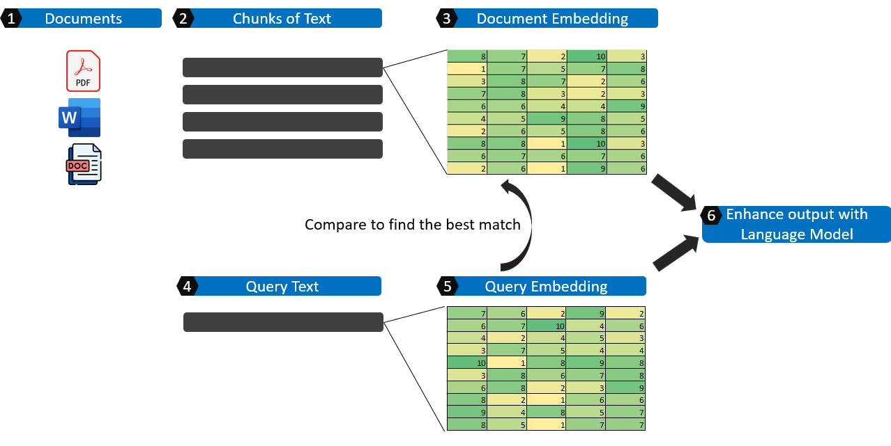

Simplified Approach to Implementing RAG on a local machine
Introduction
One of the interesting applications of Generative AI is searching for information within your own documents which is termed as Retrieval Augemented Generation or RAG in short. There are many different combinations and software to setup a RAG on a local system. the ability to perform RAG entirely on a local system looks to be slightly more challenging. In this article, we would like to share on some of the more simple and straightforward ways RAG can be implemented on a local machine without the need to call an API over the internet.
Most straightforward - Install directly from NVIDIA
The most straightforward way to experiment chatting with your documents is with the NVIDIA tool ChatRTX demo app which can be downloaded from the NVIDIA website and installed directly. More details about the tool can be found here
High Level illustration of RAG

There are many useful blogs and resources explaning about Retrieval Augmented Generation (RAG) and this is my attempt to explain it in simple terms with the basic components.
- In the first step, relevant text is extracted and consolidated from the source documents.
- These documents are broken up into chunks, logical smaller pieces of information.
- Each of the text in the chunk is transformed into an embedding which is essentially representing the text in numbers and is usually in a matrix format.
- We get the query text.
- The query text is also transformed into an embedding and is compared against the collection of document embeddings to find the most relevant chunks of text.
- The query, together with the relevant chunks of text are fed into a Large Language Model as part of the context to output a coherent response.
Concept of Embedding and sentence embedding
For the concept of embedding, I found that Jeremy Howard explains it best in his free course and the link to the lesson can be found here: https://course.fast.ai/Lessons/lesson7.html. In his lecture, he explains about embedding through the recommendation systems technique, collaborative filtering, which is about creating numeric representations of users and movies based on their interactions. In a much more complex manner, words and their positions can be transformed into a numeric representation. Often this is based on training of predition of a masked word. More details about sentence embedding can be found in https://docs.cohere.com/docs/text-embeddings
Indexing and search
- Revise on Jacquard similarity
- Example on how Jacquard similiarity works
Pair Encoder to be used for search
Cross Encoder for more accurate score
- Need to check on the limits of the score and what do they mean
- Potentially this can also be used as a threshold filter to take out irrelevant results to prevetn hallucination
- https://www.sbert.net/examples/applications/cross-encoder/README.html
- Use the example sent out in the email
ChromaDB
Implementing Language Models Locally
Further learning
- Resource on prompt engineering: https://www.promptingguide.ai/
Additional Ideas
- Compare how is RAG search different from the traditional indexing and search